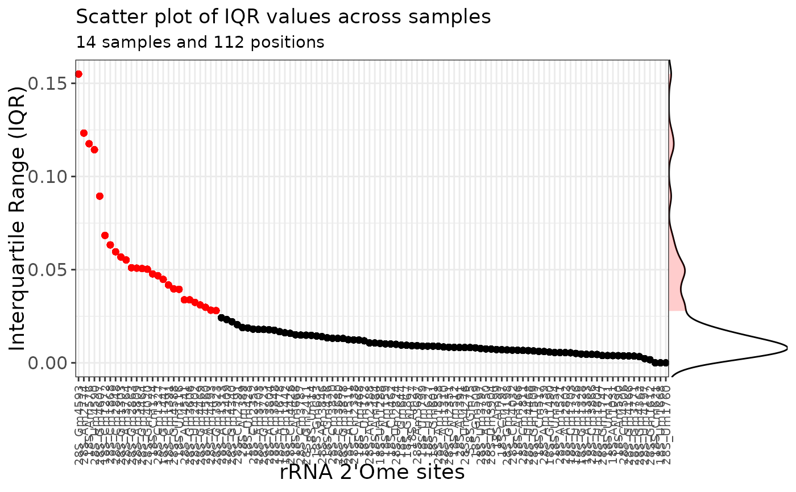

Plot sites in increasing/decreasing order of IQR or variance
Source:R/plot_sites_by_iqr.R
plot_sites_by_IQR.RdThe sites that show an IQR/variance higher than median + 2*MAD are colored in red and are considered as the most variant sites.
Examples
data("ribo_toy")
data("human_methylated")
ribo_toy <- rename_rna(ribo_toy)
ribo_toy <- annotate_site(ribo_toy,human_methylated)
plot_sites_by_IQR(ribo = ribo_toy, plot = "IQR")
